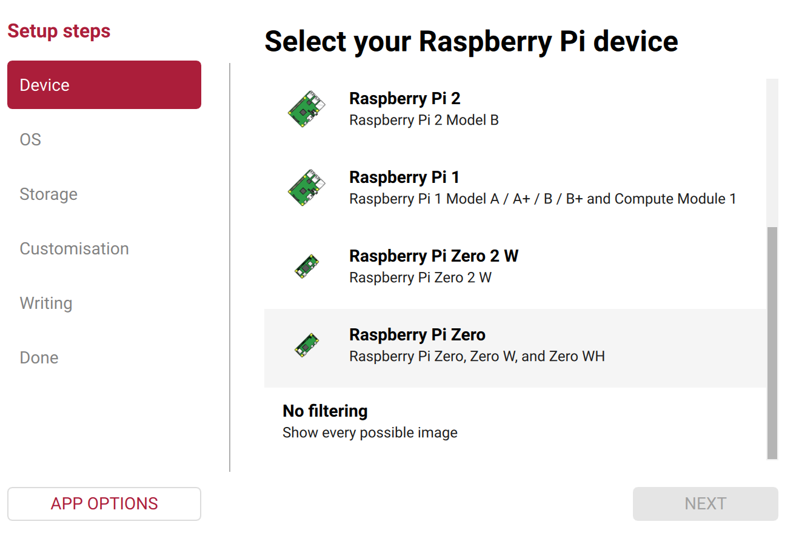

Prepare your
SeedSigner
Download it, check it, put it on the card.
Download the firmware, check it against SeedSigner's published hash, write it to a microSD.
SeedSigner and ShieldSigner are not related to this page and do not endorse this page.
Software comes only from SeedSigner's own GitHub checked locally in your browser this page loads nothing from any other server
Which one did you buy?
It is on your order. The two with a card slot run ShieldSigner.
Premium and Plus run stock SeedSigner. Plus Smartcard and CardSigner run ShieldSigner, the Satochip fork.
1 Download the software
Your browser will show that it is downloading from github.com. That is how you can tell where it really came from.
One file gets saved to your computer, usually in your Downloads folder.
Official instructions come from , not from Bitsaga.
Exact URL
Open the release page and compare the filename yourself.
Fetch and hash it without this page
Different board? Every official image is at github.com/SeedSigner/seedsigner/releases. This page only covers the Raspberry Pi Zero v1.3, which is what Bitsaga ships.
2 Check it is genuine
Drop the file you just downloaded here
Drop the image file here
It stays on your computer. Nothing is uploaded anywhere.
Read locally, hashed in this tab. Nothing is sent anywhere.
What this is compared against
- Expected hash
- Computed hash
- not yet
- Signed by
- Fingerprint
Check the signer against sources Bitsaga does not control
A match is not a safety certificate
Matching means this is the file SeedSigner published, unaltered. It does not mean the software is free of bugs. An authentic, correctly signed release can still carry a serious one. Read what changed and what is currently broken before you rely on it.
Release notes for this version · Open issues
Do not trust Bitsaga's checkmark
Check the signature yourself
Has anyone rebuilt this from source?
Rebuild it from source and get the same bytes
SeedSigner's build is reproducible, so the hash above is not something you have to take anyone's word for. Anyone can derive it from the source. That is the strongest link in this whole chain, and it is the reason this page is a guide rather than an authority.
Audit this page against its own signed manifest
3 Put it on the card
You are on a phone. This step needs a computer. Everything up to here is done, so pick it up on a laptop when you can.
Use Raspberry Pi Imager. It is free, and it checks the card afterwards.
Raspberry Pi Imager, custom image, verify-after-write on.
Get Raspberry Pi Imager Grab it while the file downloads.
- Open the app.
- Device: scroll down, choose Raspberry Pi Zero. Not Zero 2 W.
- OS: scroll to the bottom, choose Use custom.
- Pick the exact file you just checked.
- Storage: choose your card.
- Write.

Write it without a GUI tool
Raspberry Pi Imager is open source, Apache licensed, and worth recommending. It also reports usage to rpi-imager-stats.raspberrypi.com: the version, your operating system, CPU architecture and locale, plus which image you picked when it comes from their own repository. Choosing your own file is not that, but if you would rather run nothing extra at all, dd is already on your machine.
Get the device wrong and you overwrite a disk with no confirmation and no undo. Check it twice.
Or keep Imager and switch the telemetry off
Verify the card, not just the file
Writing can go wrong after a correct file. Imager verifies by default; confirm it did. On the smartcard firmware the device itself can verify a freshly written card under MicroSD Card Tools.
4 Start it up
Put the card in and plug in the power.
Insert the card, power it. First boot takes roughly twenty seconds.
The device does not check the software again when it starts, so it runs whatever is on the card and the check you did in step 2 is the only one there will ever be. Keep the card with the device.
The device performs no signature check at boot, so it executes whatever the card holds and step 2 is the only verification in the chain. Keep the card with the device, and treat a card you did not write yourself as untrusted.
Your screen needs one setting changed
Your model has the bigger screen, so the picture looks wrong at first. Fix it once and it stays fixed.
The 320x240 panel is not the default. Set it once, with persistence on, or you will redo it every boot.
- Go to Settings.
- Turn on Persistent settings first. Without this, the next step is forgotten every time you switch off.
- Then Advanced, then Hardware, then Display type.
- Choose st7789 320x240.
Skip the menus: put a small file on the card instead
Before you eject the card, save a file called settings.json in the top level of
the card containing exactly this. It sets the same two options at first boot.
Type it yourself rather than taking ours. It is two lines and it means you are not trusting a file from your seller on the device that will hold your keys.
Practise first
Use a throwaway seed until this feels easy.
Rehearse the full flow with a throwaway seed first.
Practise in the simulator, in your browser, no hardware needed.
Before you put real value behind it
- Generate the seed with your own entropy, dice rather than the camera, and check the entropy indicator.
- Confirm the xpub on a second, independent path before you accept any receive address.
- Send a small test amount and spend it back before funding properly.
- Inspect the hardware. Verified firmware says nothing about a tampered board.
The honest ceiling
Software cannot verify hardware. Reproducible builds push the boundary a long way but they do not remove it, and no page can prove itself. Everything here is designed so you can check it with tools you did not get from us. That is the most this can honestly offer.
Want a hand?
I do guided setup calls. We go through this together on a screenshare, then set up your seed properly.
5 Check the hardware
Open the case and hold your boards next to these pictures. Look at the parts and the lines between them, not at the printed text.
Reference images for each board in the device. Compare part placement, part count and traces. Markings and date codes vary by batch. The layout must not.
Pinch or scroll to zoom, drag to move. Tap a number to go to that part.
These are pictures of one board each, not of yours. The text on the chips, the date codes and the colours can be different. The place, the shape and the number of the parts, and the lines between them, must be the same.
One reference board each, not your unit. Chip markings, date codes, solder mask shade and second-source passives can differ. Placement, footprints and traces must match. A visual check finds added parts, extra wires and a swapped board. It cannot see inside a chip or inside the inner layers of a board.
Where these images come from
- Pi Zero v1.3: photo by Horst-Josef, Wikimedia Commons, CC BY-SA 4.0.
- Pi Zero W (WH): photo by the Raspberry Pi Foundation, Wikimedia Commons, CC BY-SA 4.0.
- Plus screen board: drawn from the designer's own Gerber files in 3rdIteration/seedsigner-hardware at commit 7e4f058, CERN-OHL-S v2. The board says "PCB Design by MadBo 11-2024".
- Waveshare 1.3 inch board: our own drawing of the facts in Waveshare's schematic. Waveshare publishes no board layout, and no open-licence photo of this board exists, so the reference is the list of parts and pins instead of a picture.


Both photos are warped onto the same 65 x 30 mm frame with the four mounting holes as anchors, so the slider compares the same spot on both boards. The W photo was taken at a slant, so tall parts lean a little. Our two images are CC BY-SA 4.0, like their sources.
Raspberry Pi does not publish the board layout of the Pi Zero, only a reduced schematic. For the Pi Zero a photo is the best reference anyone has. The Plus board is open hardware, so its drawing is exact and stays sharp at any zoom.
The same folder also has a newer KiCad version of the Plus board, with a 6-pin USB-C. Your board can be that version. Colours in the drawing are not real colours.
Parts list of the Plus screen board
| Ref | Qty | Part | LCSC |
|---|---|---|---|
| J3 to J10 | 8 | C&K PTS636 SM25F push button | C2689642 |
| CONN2 | 1 | Liansheng FH-00369, 40-pin socket to the Pi | C2685112 |
| J2 | 1 | Samtec ZF5S-40-01-T-WT, 40-contact ribbon connector | C262648 |
| J11 | 1 | HRO TYPE-C-31-M-12, USB-C | C165948 |
| Q5 | 1 | SI2302, SOT-23 transistor | C5296725 |
| R1 to R4 | 4 | 0 ohm, 0805 | C269738 |
| R5 | 1 | 10k, 0805 | C17414 |
| R6 to R8 | 3 | 62 ohm, 0805 | C2933559 |
| R9 | 1 | 330 ohm, 0805 | C2907321 |
| R10 | 1 | 33k, 0805 | C17633 |
| R12, R13 | 2 | 5.1k, 0805 | C144553 |
| C1, C2 | 2 | 100 nF, 0805 | C1711 |
| CONN1 | 1 | 2.8 inch IPS SPI screen, 40 pins, ST7789 |
Copied from the BOM file in the same folder. Nothing on the list is a radio, a memory chip or a processor.
Make these images yourself
git clone https://github.com/3rdIteration/seedsigner-hardware git -C seedsigner-hardware checkout 7e4f05816bac9b20943996b960d65f37322d617e # Open display_hats/plus_hat/designspark_format/*.gbr in any Gerber viewer, # or rebuild the two SVGs on this page byte for byte: git clone https://github.com/bitsagarob/seedsigner-verify && cd seedsigner-verify npm i pcb-stackup@4 node tools/render-plus-hat.mjs ../seedsigner-hardware/display_hats/plus_hat/designspark_format sha256sum hw/plus-hat-*.svg # compare with signatures/manifest.txt
tools/align-pi-photos.sh downloads the two photos and holds the hole coordinates used for the warp, so you can check where every pixel came from.
What looking cannot prove
A chip with the right shape and the right text can still be a different chip. The Pi Zero has copper layers inside the board that nobody sees without an X-ray. A good match lowers the risk of a crude implant or a swapped board. It does not prove the hardware is honest.